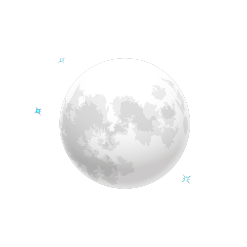
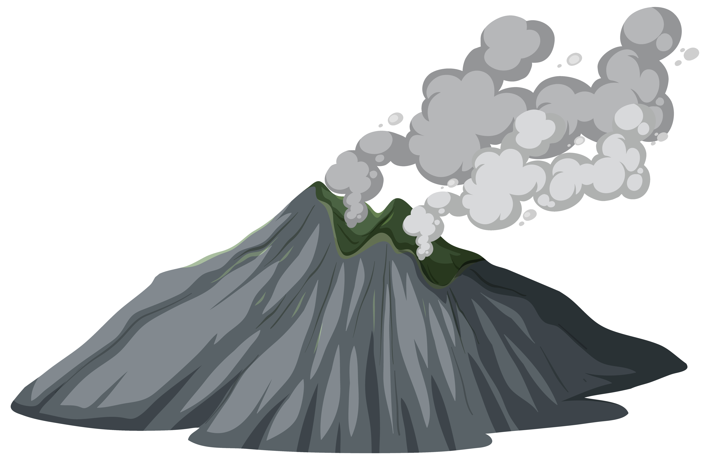
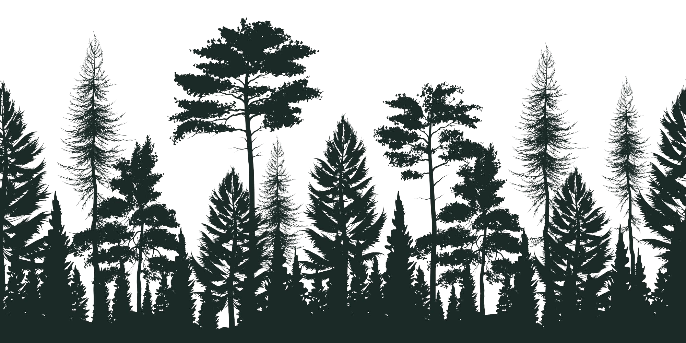

Misteri Merapi
Gunung Merapi adalah salah satu gunung yang bener-benar banyak menyimpan legenda dan cerita mistis. Salah satunya yang paling terkenal adalah keberadaan Pasar Bubrah. Di waktu-waktu tertentu hewan gaib seperti macan putih, ular besar, dan lainnya kerap membuat orang yang mendaki harus lari terpontang-panting. Satu hal yang harus dipahami ketika ke Gunung Merapi: selalu jaga hati, lisan, dan perbuatan.
  